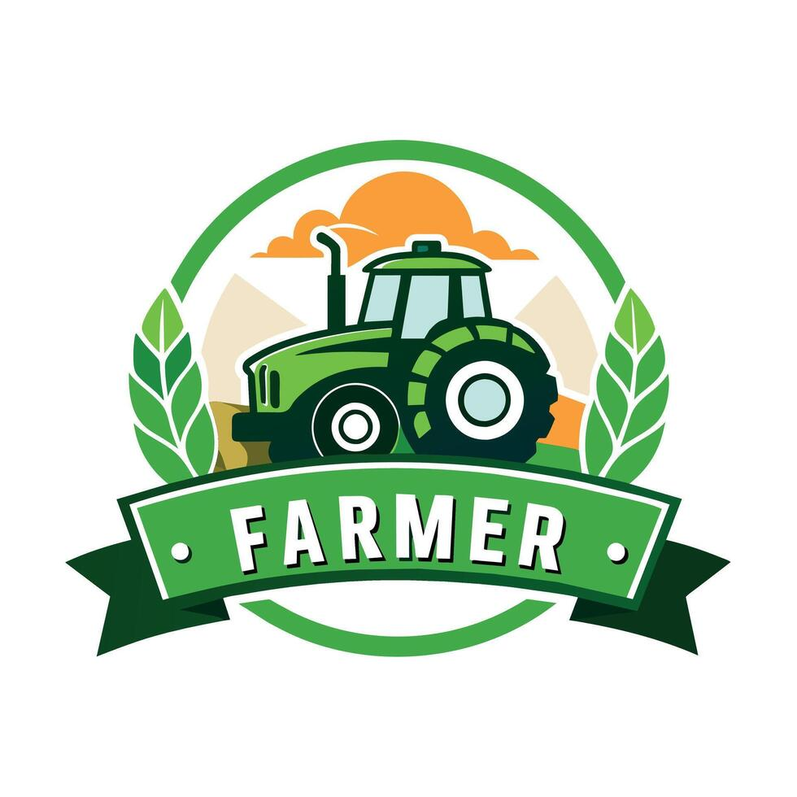

Farmers Info Hub
Empowering farmers with sustainable and modern agriculture knowledge.

Image Gallery
Farming Techniques
Modern Farming Tools
Challenges
Contact
🔍 Search
1 / 3
Drone surveying farmland
2 / 3
Modern tractor plowing
3 / 3
Using biofertilizers
Search Farmers Info Hub
Search